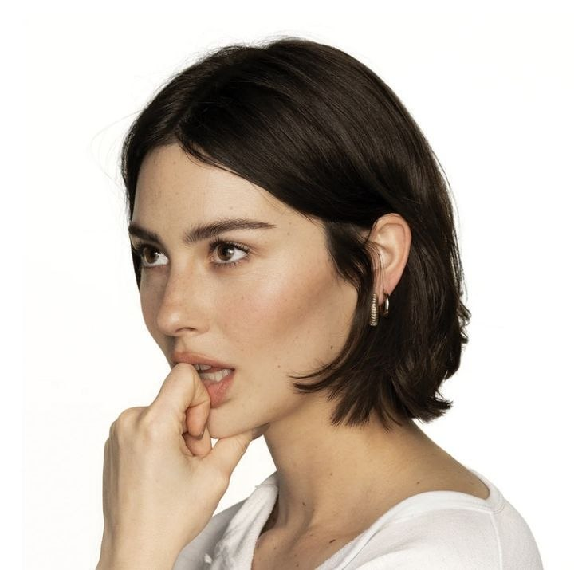

Gracie Abrams adalah penulis lagu yang membuat kejujuran terdengar lembut. Musiknya berada di wilayah indie pop yang intim, dengan gitar dan piano yang sederhana, produksi bernuansa kamar tidur, dan vokal yang rapuh seperti suara hati yang dibisikkan di malam hari. Liriknya seperti halaman buku harian yang dibuka tanpa takut: tentang rindu yang tak terucap, hubungan yang rumit, dan perasaan yang terlalu besar untuk disimpan sendiri.
Karena itu lagu-lagunya terasa dekat dengan Gen Z, generasi yang tumbuh dengan banyak rasa tetapi tidak selalu punya kata untuk menyampaikannya. Ia tidak menggurui dan tidak menyembunyikan luka. Ia hanya duduk di samping pendengarnya dan berkata bahwa merasa kacau pun tidak apa-apa. Lagu-lagunya cocok menemani perjalanan pulang yang sunyi, tugas yang menumpuk saat larut malam, atau hari ketika kita hanya ingin dimengerti tanpa banyak penjelasan.
Albumnya Good Riddance (2023) dan The Secret of Us (2024) mendahului album ketiganya, dan The Secret of Us memuat single pertamanya yang menembus peringkat satu di Inggris, “That’s So True”. Ia juga dekat dengan produser Aaron Dessner, yang kembali menggarap karya terbarunya.
Pada 17 Juli 2026 ia merilis album ketiganya, Daughter From Hell. Album berisi 16 lagu itu menelusuri patah hati, jati diri, dan ketidakpastian di awal masa dewasa. Rolling Stone melaporkan album tersebut debut di puncak tangga album, menjadi album nomor satu pertamanya.
10.5M
Spotify Followers
38.5M – 38.9M
Monthly Listeners
3
Official Full Albums